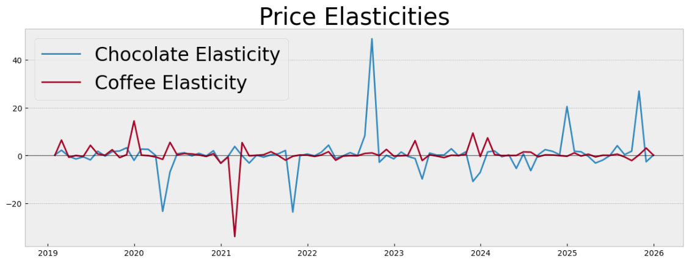

Start
Introduction
|

|
Introduction
|
|
Employment
| Allrounder |
Bremer Hütte |
06/25 - 09/25 |
|
|
|
| Research Assistant |
University of Münster |
10/21 - 04/25 |
|
||
| Wissenschaftliche Hilfskraft |
University of Würzburg |
09/15 - 06/21 |
|
|
Studies
| PhD in Mathematics |
University of Münster |
10/2021-06/2025 |
| Master in Mathematics |
University of Würzburg |
10/2018-12/2020 |
| Thesis: Monomial and Quasi-Monomial Characters |
||
| Bachelor in Mathematics |
University of Würzburg |
10/2016-03/2019 |
| Thesis: Differentialgleichungen endlicher Galoiserweiterungen von Funktionenkörpern |
||
| Bachelor in Mathematical Physics |
University of Würzburg |
10/2014-09/2017 |
| Thesis: Freiheitsgrade und Verschränkungsentropie in der AdS/CFT-Korrespondenz |
Volunteering
| PhD Representative |
University of Münster |
05/2022-04/2024 |
|
||
| Chair of students council of faculty of physics |
University of Würzburg |
10/2015-09/2017 |
|
GitHub: Image classification project
GitHub: Time Series analysis

Test text
See this page
Player 1 turn
Waiting...
For more information one can look at the very intersting paper Generation and Prediction of Time Series by a Neural Network by
Choose your favorite Board game
I am a paragraoh
W3Schools.comVerantwortlich im Sinne des Presserechts:
E-Mail: loading...
Anschrift: